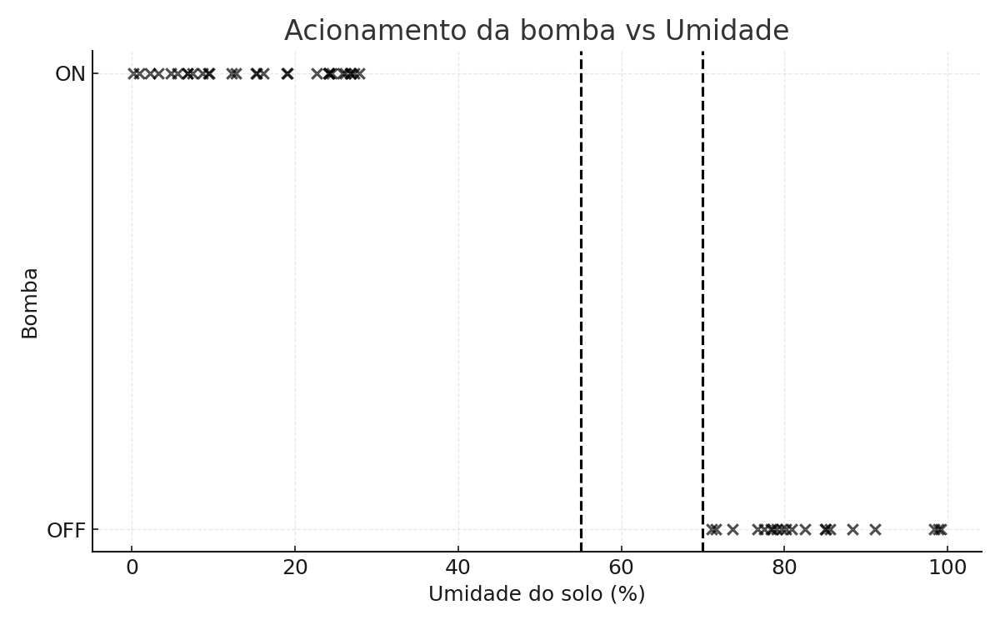
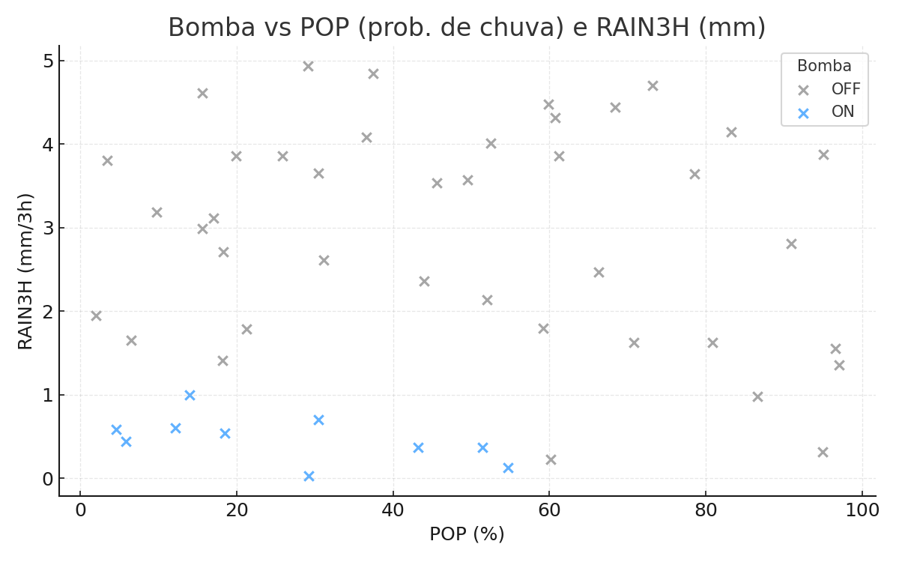
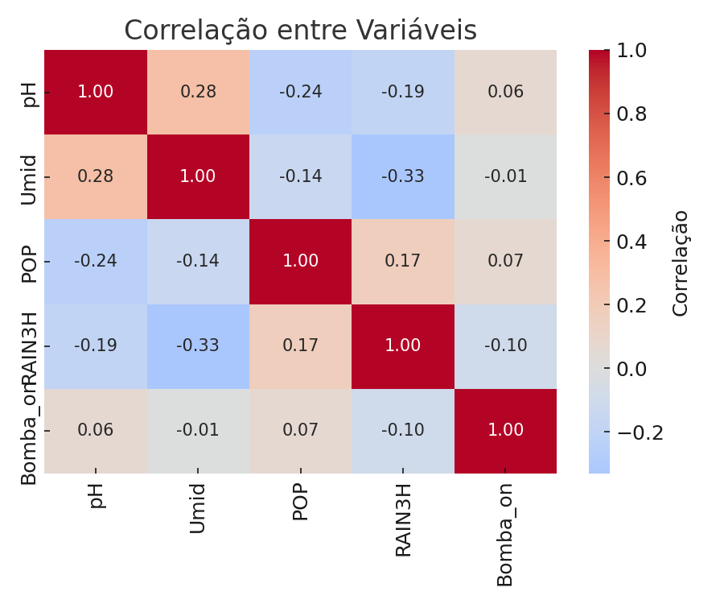

FarmTech Solutions
Relatório Final – Sistema de Irrigação Inteligente
Este relatório apresenta a análise visual do comportamento do sistema de irrigação, com base nos dados simulados e processados no Wokwi e no R.
1️⃣ Acionamento da Bomba vs Umidade

2️⃣ Bomba vs POP (Probabilidade de Chuva) e RAIN3H (mm)

3️⃣ Correlação entre Variáveis
